01
接住
复述用户最有情绪重量的一句，不分析人格，不急于给建议。
不试图让你马上睡着，也不要求你今晚想明白。它只是陪你，把这一夜分成更小、更轻的部分。
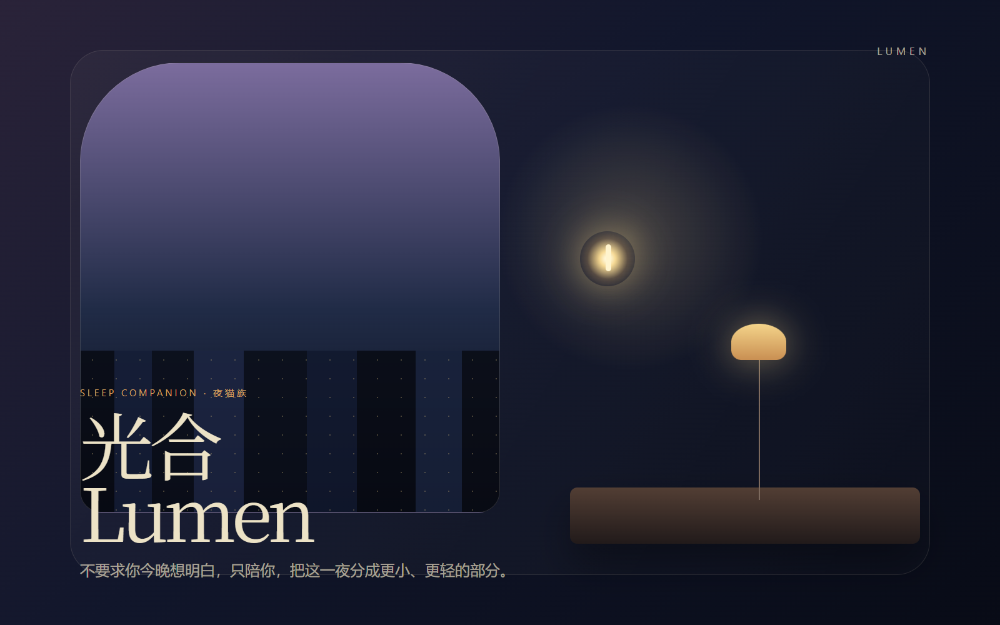
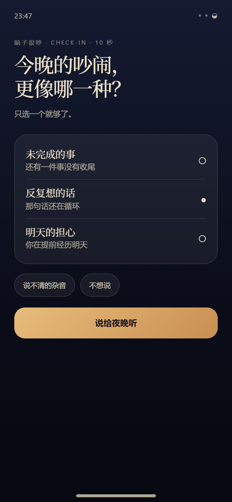
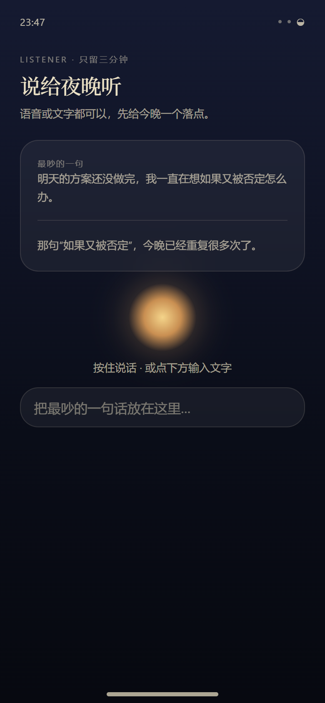
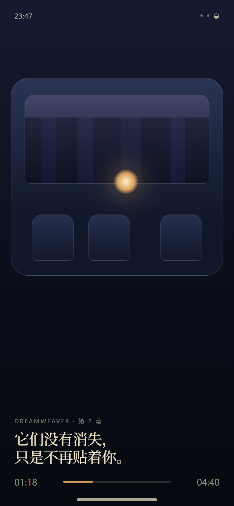
界面只在需要时出现。默认是声音与呼吸，梦境、对话和记忆管理都由用户主动进入。
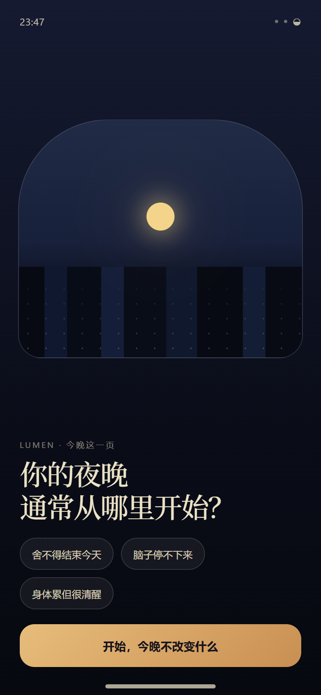
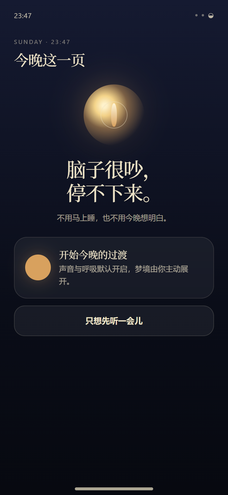
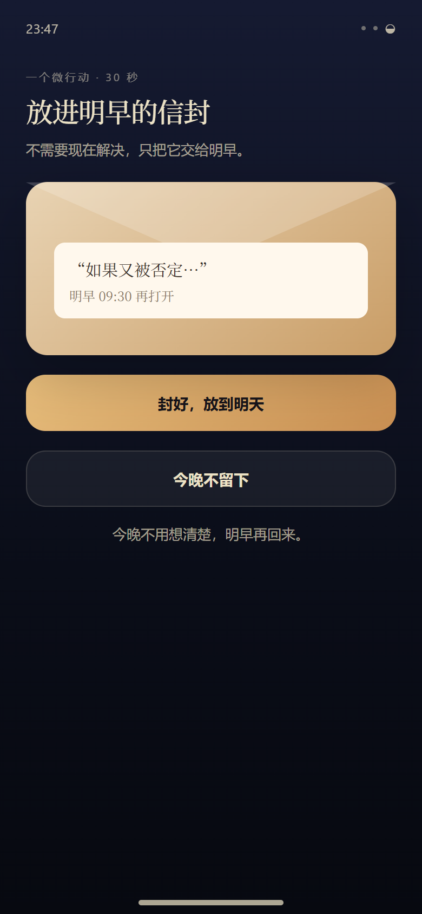
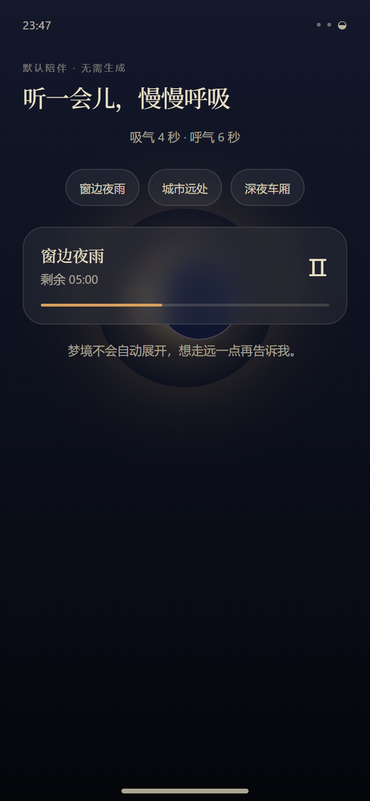
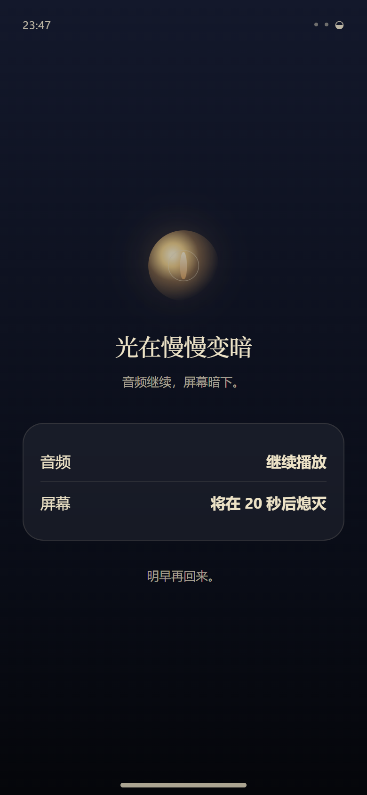
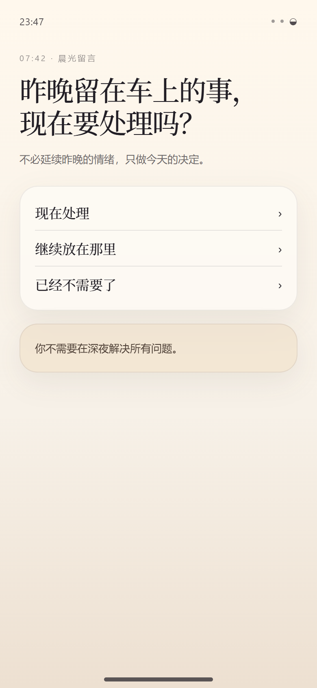
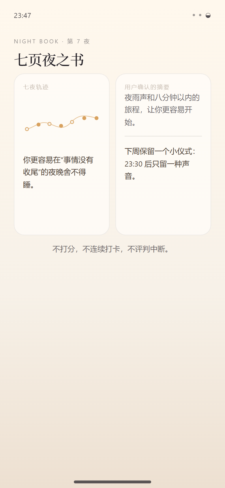
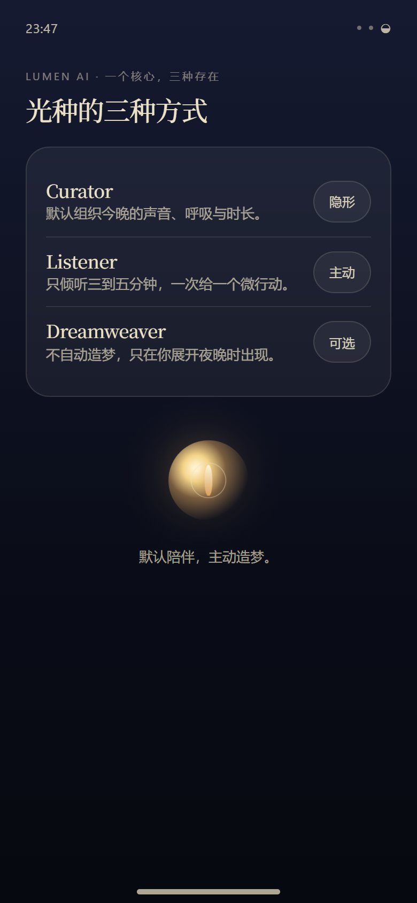
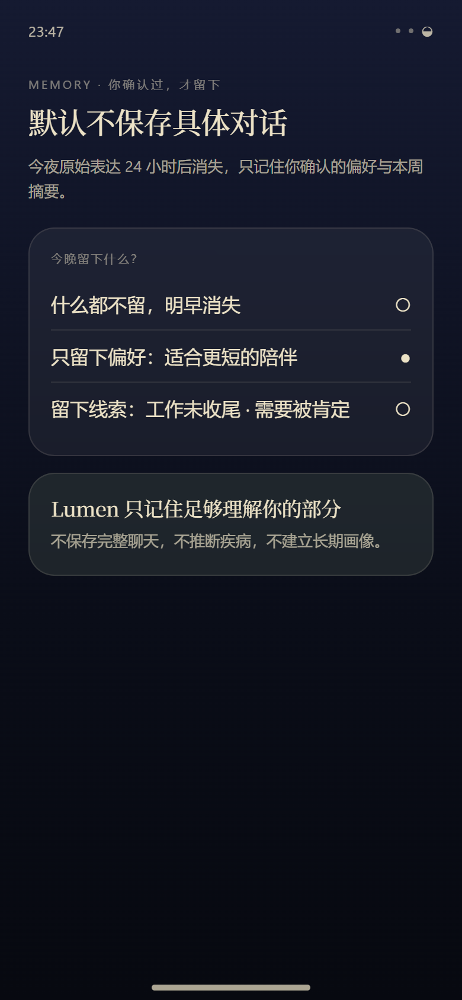
每天对应一个产品动作、一个用户感受和一次系统学习。中断不会被归零，上一夜也不是失败。
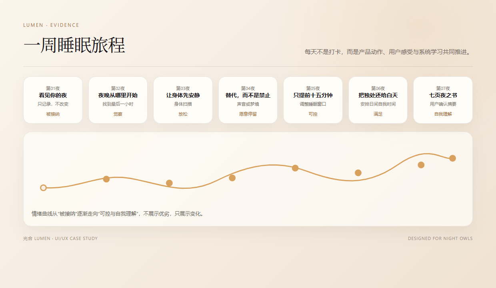
用户说：“明天的方案还没做完，我一直在想如果老板又否定怎么办。” Lumen 不急着安慰，也不在深夜给行动计划，只帮用户把问题分成可以承受的更小部分。
复述用户最有情绪重量的一句，不分析人格，不急于给建议。
把混乱变成一句可理解的话，让用户知道“我被听见了”。
允许把问题带到明早。夜晚不需要完成所有收尾。
Curator 默认隐形运行；Listener 由用户主动开启；Dreamweaver 只在用户点击“展开今晚这一页”后出现。AI 不抢占夜晚，也不伪装成真人咨询师。
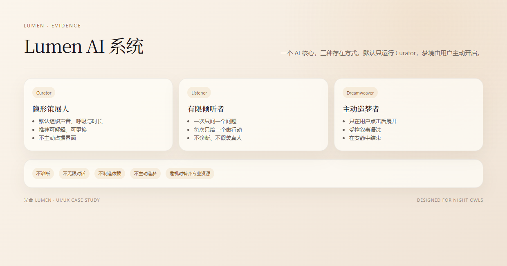
组织声音、呼吸与时长。推荐可解释、可更换，不直接占据界面。
一次只问一个问题，每次只给一个微行动，三到五分钟后主动收束。
目前不生成，点击后展开插画、旁白和三层视差。故事在安静中结束。
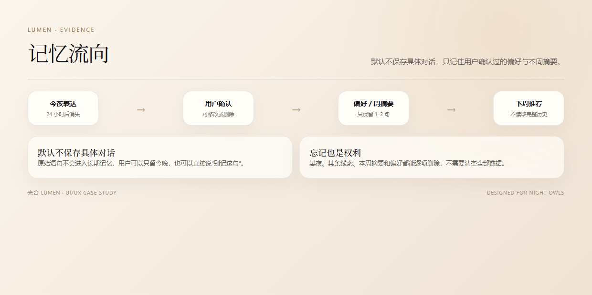
语音与文字采用双通道、单会话：可以按住说话，也可以直接打字；转写先确认再发送；松手后立即结束录音。AI 默认不保存具体对话。
只复述最有情绪重量的一句，不假装真人，不使用“我完全懂你”。
一次只给一个 30–90 秒动作，例如把担心放进明早的信封。
问题可以明天回来。深夜不处理复杂决定，也不把完成动作绑定睡眠质量。
用户不主动点击时，梦境不会出现。展开后，4–6 个场景、短句旁白与三层视差把“脑内循环”转译成一趟安静的夜班旅程。
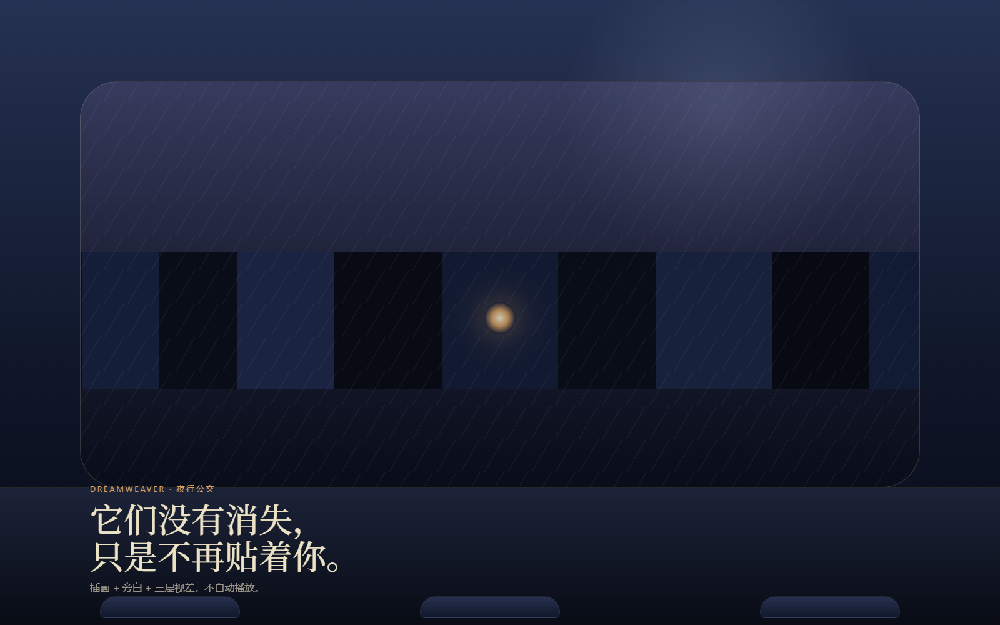
研究只保留能支撑设计判断的部分：夜晚是自主时间，睡眠不能以剥夺自由为代价。主 Persona 林澈，27–32 岁都市创意与互联网从业者，常在 00:30–02:00 入睡，伴随报复性熬夜与脑内循环。
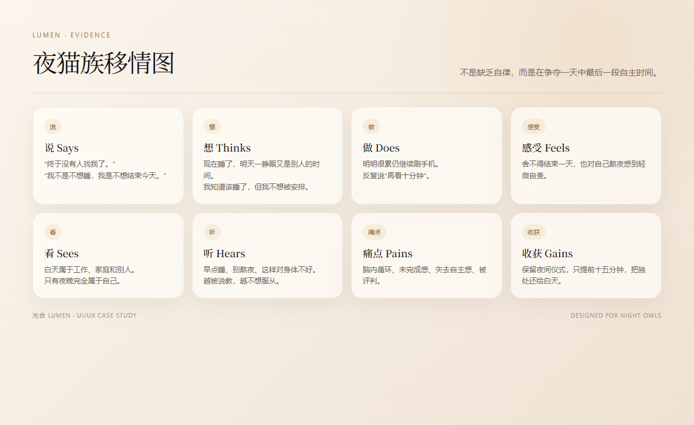
不说“别想了”，也不要求立刻早睡；先把问题从大脑里移到安全的地方，明早再决定是否处理。
视觉概念是一间夜深时还亮着微弱灯光的私人书房。每屏只允许一个主要光源，绘本感不牺牲夜间可读性。
纸张颗粒、柔雾、水彩边缘与轻微胶片噪点，避免大面积玻璃拟态。
光种缓慢移动；4 秒吸气、6 秒呼气；视差远景 3–5%，中景 8–10%，近景 12–15%。
展示字体用宋体，正文用 MiSans 或系统无衬线。行长 16–22 个汉字。
关键确认始终显示文字；支持减少动态效果、单手操作和夜间低亮度。
作品集明确区分“产品内 AI”与“制作阶段 AIGC”。前者是 Curator、Listener、Dreamweaver 的产品设计概念；后者负责研究、插画与动效预演，最终光源、构图和节奏仍由人工统一。
访谈提纲、Persona 归纳、章节文案、AI 话术、安全边界与测试用例。
夜行公交、夜雨、空座位和私书房视觉。生成画面不直接嵌入文字，所有标题由 HTML 渲染。
车窗、光影、视差与呼吸测试，用于确定运动方向，不替代最终品牌节奏。
负责“组织今晚、有限倾听、主动造梦”。不接传感器，不读完整历史，不做医疗诊断，不制造依赖。
用于探索视觉与文本，所有产出经过统一光源、内容审校与人工取舍。作品集不把工具数量当作设计成果。
Lumen 的设计目标不是提升对话时长或生成次数，而是让用户更容易开始、愿意退出，并在第二天重新获得处理问题的选择权。
夜间暗色界面、静默通知、无红色提醒、无失败状态、无连续打卡惩罚。
原始表达默认 24 小时后消失；偏好与周摘要需用户确认；每一项都能单独删除。
若出现自伤或危机表达，暂停普通流程并提供专业资源。Lumen 不替代医疗或心理咨询。
真实 App、后端、传感器、语音识别、生成模型、数据持久化、可用性测试数据与睡眠改善结论。
设计思维、AI 产品判断、视觉系统、动效方向、伦理边界与可复现的静态案例呈现。